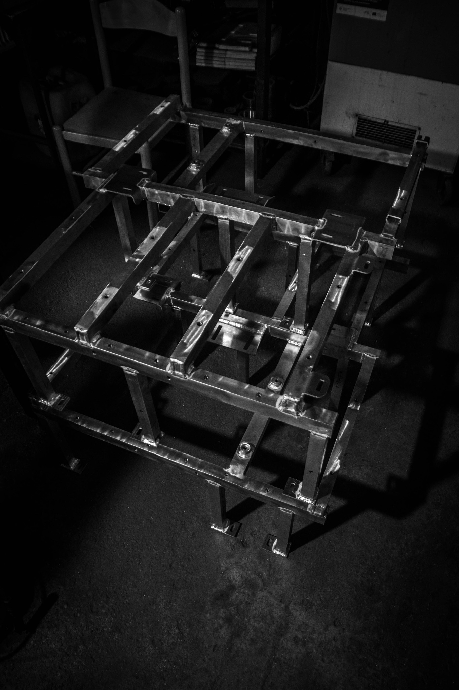
Nýtovaný hliníkový rám
Otevřený rám z hliníkových profilů spojených nýty.

Otevřený rám z hliníkových profilů spojených nýty.
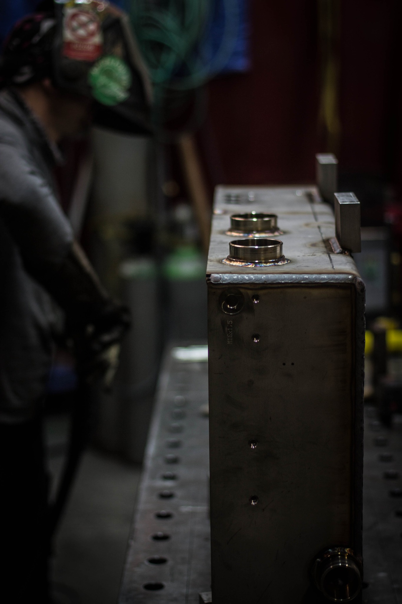
Plechová skříň pro usazení elektrických komponent.
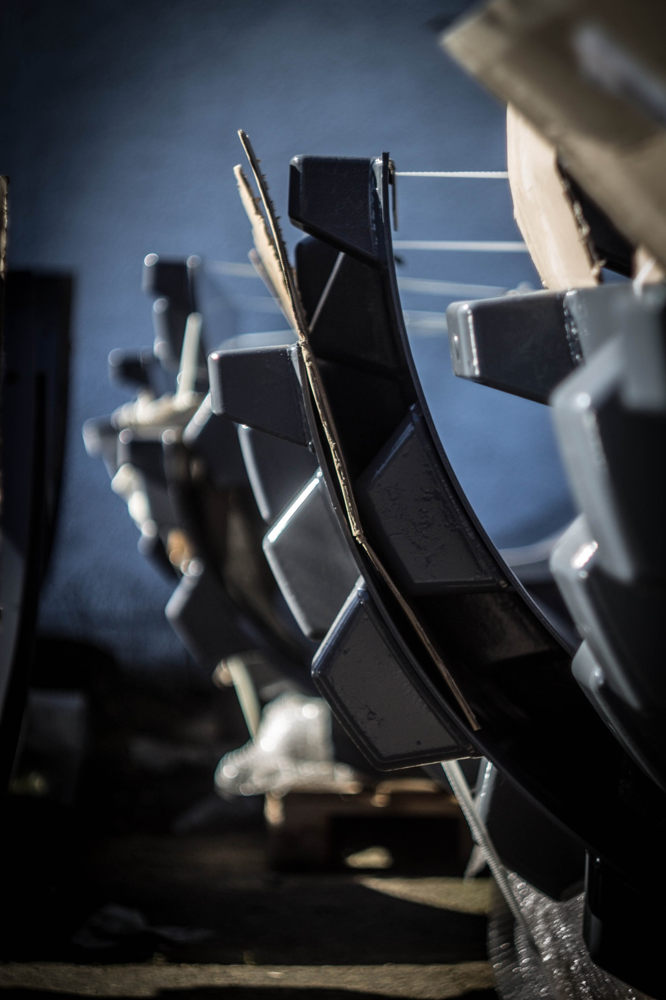
Nástavec pro úpravu povrchů vyrobený podle výkresu zákazníka.
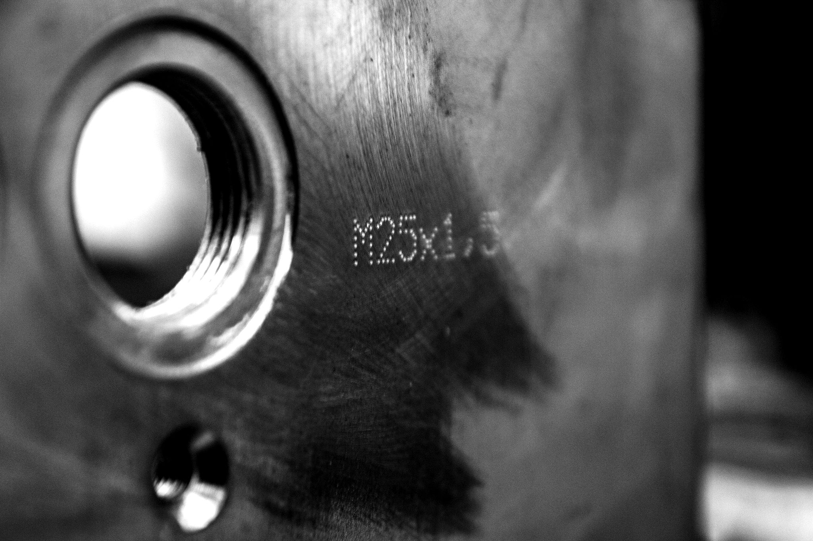
Závit M25x1,5 vyřezaný do ocelové stěny.
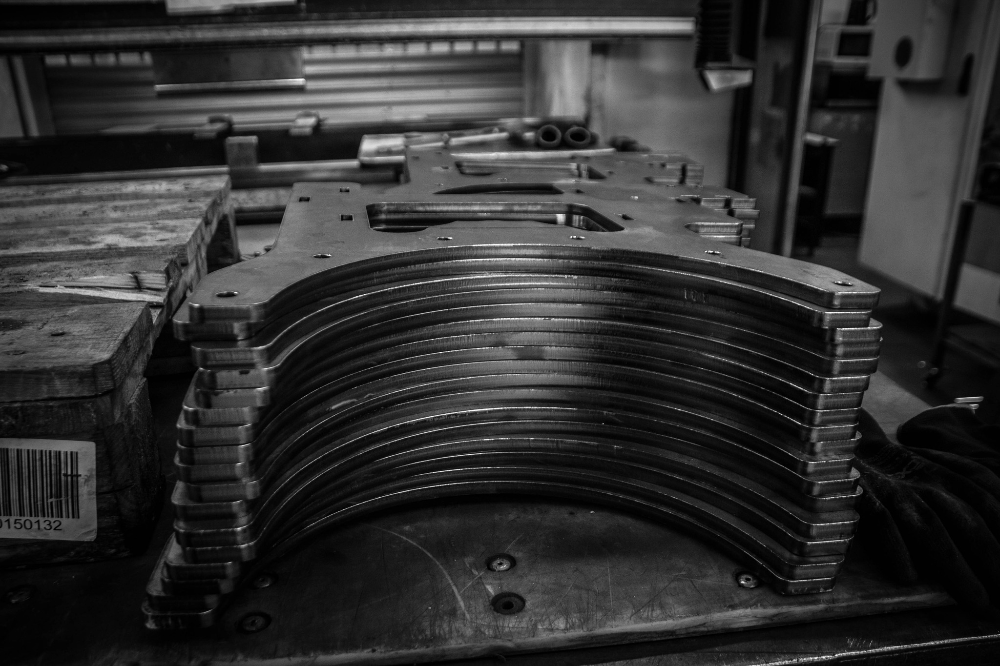
Obloukové díly vyřezané z plechu.
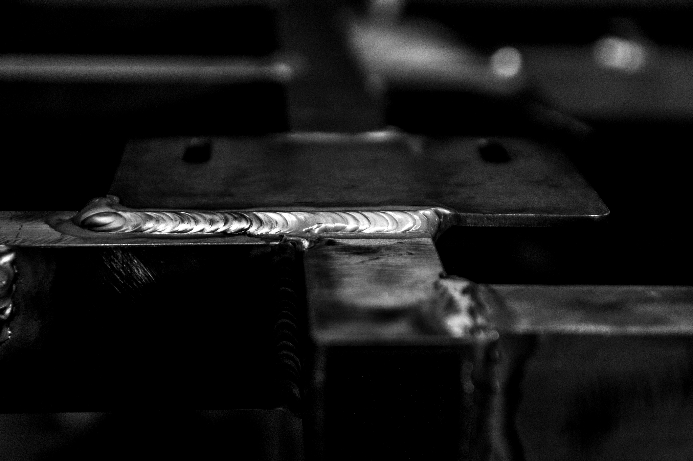
Svar na ocelové konstrukci z blízka.
Rámy, skříně a konstrukce podle vašeho výkresu.
Vyvíjíme a vyrábíme pro kolejová vozidla, od prototypu po sérii.
Soustružení a frézování dílů a svařovaných komponent.
CNC laser a ohraňovací lisy pro díly kolem svaru.
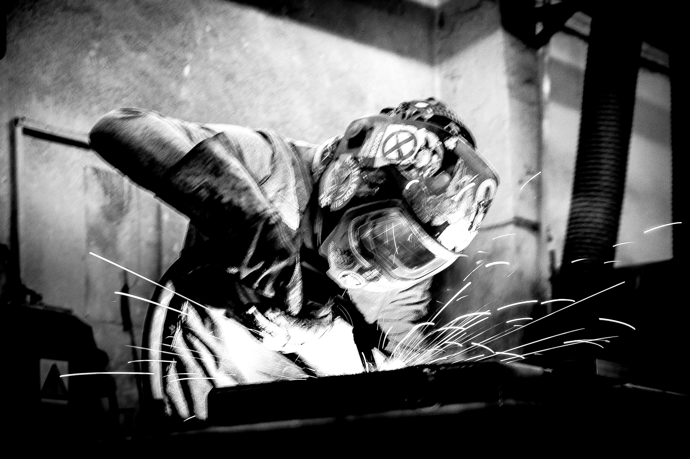
Stavíme na lidech, technické zkušenosti, kvalitě a dlouhodobé spolupráci.
NADE, s.r.o. je česká strojírenská firma. Vyrábíme obráběné díly a svařované sestavy, významnou část tvoří komponenty pro kolejová vozidla.
Pracujeme v Krásnu a Horním Slavkově v západních Čechách. Jednatelkou je Uta Nádeníčková.
Naši zákazníci
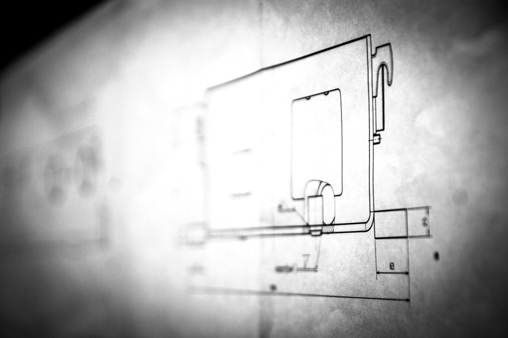
Uveďte množství, materiál a požadovanou normu.
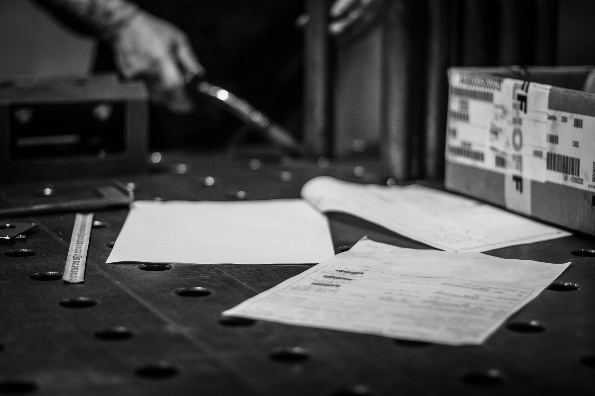
Náš tým výkres zkontroluje a odpoví nabídkou.
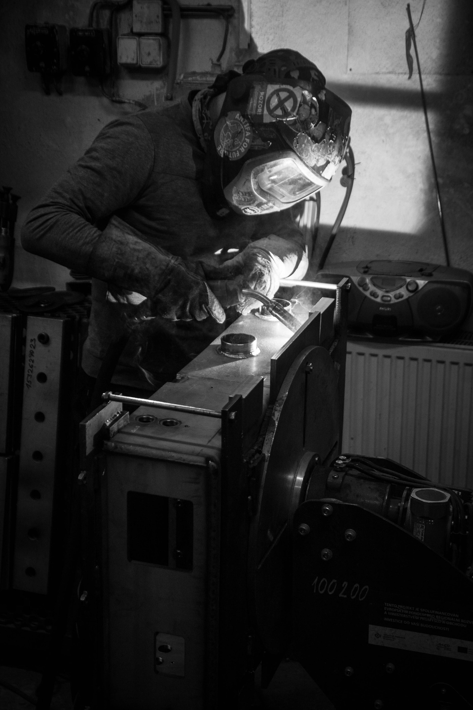
Svařování, obrábění, kontrola a dodávka.
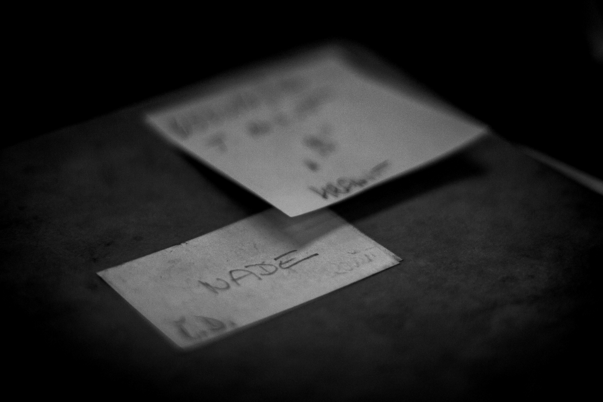